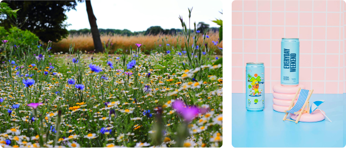

Image Diversity

We don’t just use professional photographs of people and places to help visualize each scenario for a project. We also use product mockups, nature landscapes, and product advertisements to help our users get the scope of what a project is asking from them to enhance the user experience and to diversify our users set of skills.
At Mosaic we have a diverse team working on creating the best experience possible and we know that are users are just as diverse as we are. To best represent our users, we use images that show all kinds of people, places and cultures as because what makes us different is what makes each of use unique.
